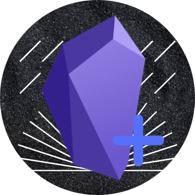
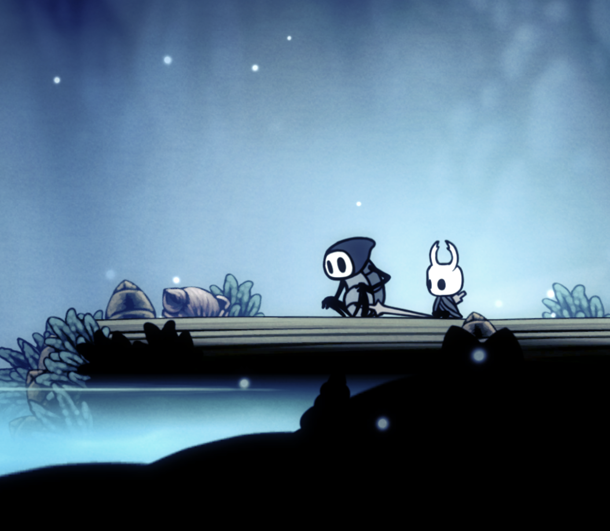
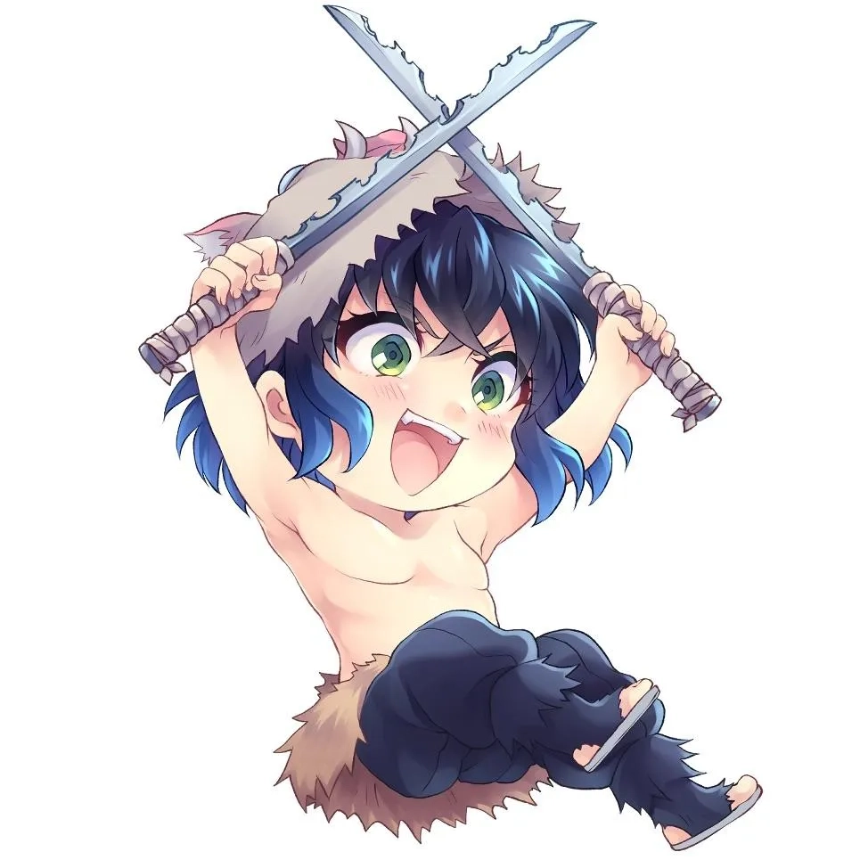
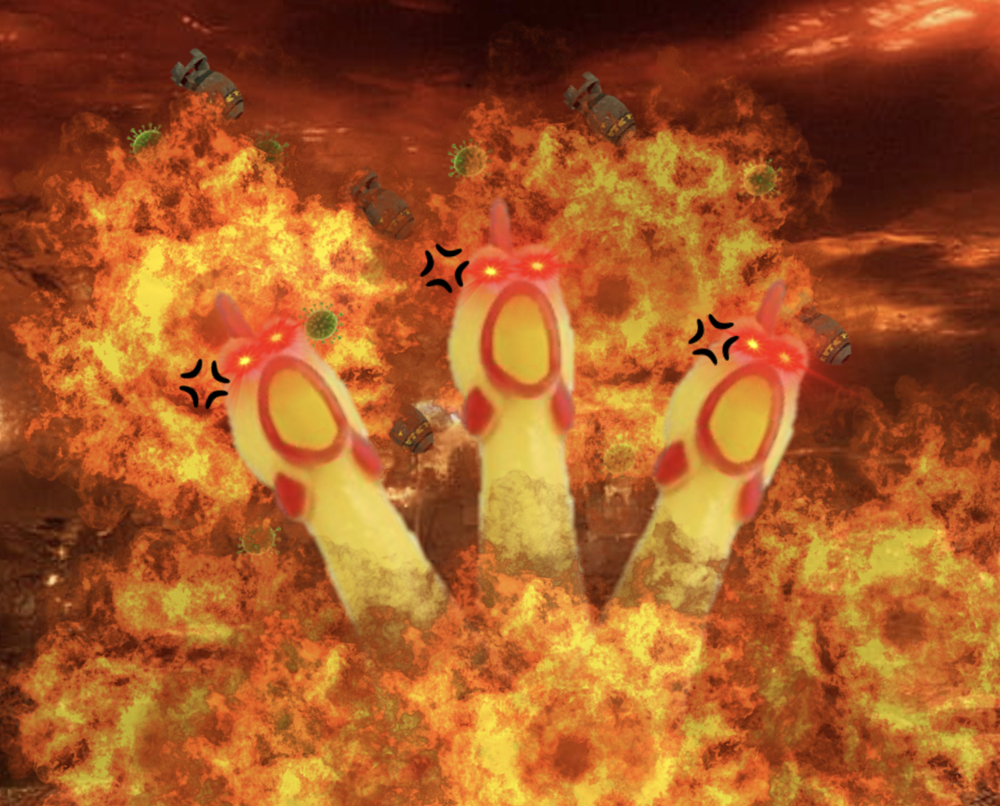
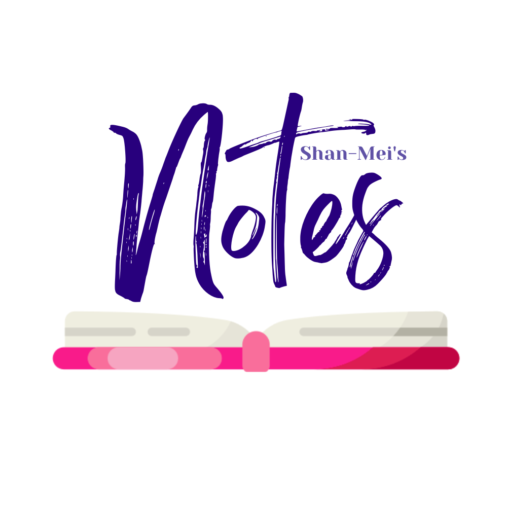
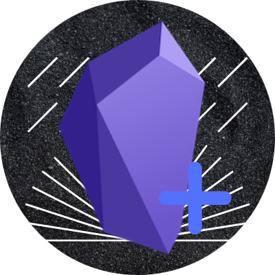
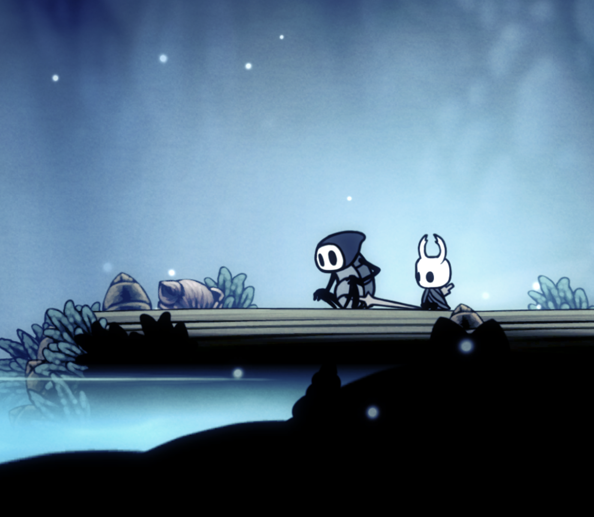
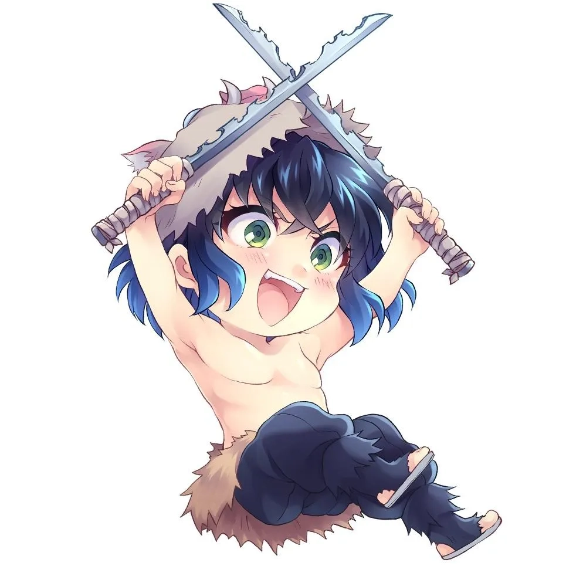
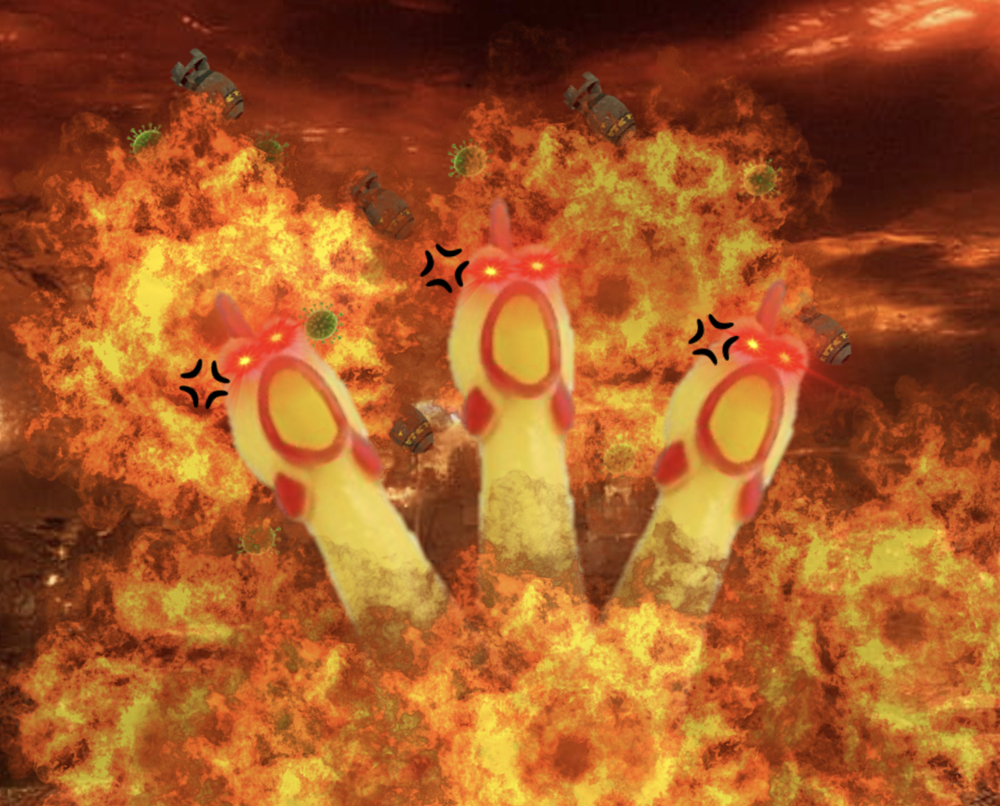
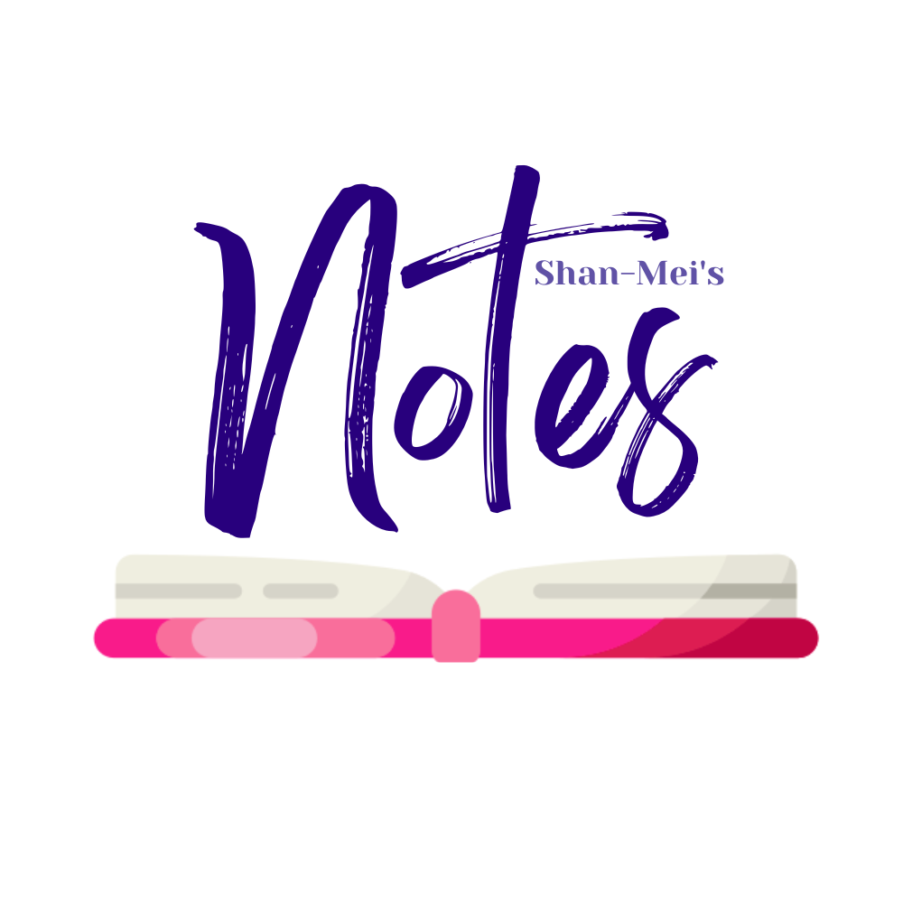

1. Help classmates and the junior years in catching up with work when they don't pay attention :)




1. Help classmates and the junior years in catching up with work when they don't pay attention :)2. Publicise my music theory courses and provide the free extra theory and lit content to anyone who doesn't want to pay for a course.
3. 'Make education free and accessible' - Edward (don't you worry, I follow the same principle)" aria-live="https://shan-mei.github.io/shanmeis-notes/">